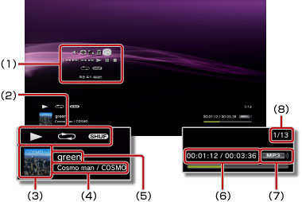

음악 > 제어판 사용하기
제어판 사용하기
화면상의 제어판에서 다양한 조작을 할 수 있습니다. 제어판은  버튼으로 표시/비표시를 전환할 수 있습니다.
버튼으로 표시/비표시를 전환할 수 있습니다.
음량 조정

 (음악)에서 재생되는 콘텐츠의 음량 출력 레벨을 설정합니다. 9 단계로 조정할 수 있습니다.
(음악)에서 재생되는 콘텐츠의 음량 출력 레벨을 설정합니다. 9 단계로 조정할 수 있습니다.
알아두기
음량 출력 레벨이 너무 높을 경우 소리가 갈라질 수 있습니다. 이 경우에는 레벨을 낮춰 주십시오.
비주얼 플레이어
콘텐츠 재생시에 표시되는 배경을 변경합니다.
알아두기
 (사진) 또는
(사진) 또는  (인터넷 브라우저) 콘텐츠를 표시하고 있는 상태에서는 비주얼 플레이어를 변경할 수 없습니다.
(인터넷 브라우저) 콘텐츠를 표시하고 있는 상태에서는 비주얼 플레이어를 변경할 수 없습니다.
재생 목록에 추가
재생중인 콘텐츠를 재생 목록에 추가합니다.
알아두기
재생 목록에 추가할 수 있는 것은 본체 스토리지에 저장된 음악 파일로 한정됩니다.
삭제
재생중인 콘텐츠를 삭제합니다.
알아두기
삭제할 수 있는 것은 본체 스토리지에 저장된 음악 파일로 한정됩니다.
화면 표시
재생중에 상태 및 기타 정보를 표시합니다. 재생하는 콘텐츠에 따라 표시되는 항목이 다릅니다.

(1) |
제어판 |
|---|---|
(2) |
상태 아이콘 |
(3) |
트랙 아이콘 |
(4) |
아티스트명/앨범명 |
(5) |
트랙명 |
(6) |
트랙 경과 시간/총 시간 |
(7) |
코덱 |
(8) |
트랙 번호/총 트랙수 |
이전
재생중인 트랙, 또는 이전 트랙의 처음으로 이동합니다.
다음
다음 트랙의 처음으로 이동합니다.
빨리 되돌아가기/빨리가기
재생 중인 콘텐츠를 빨리가기 또는 빨리 되돌아가기로 재생합니다.  버튼을 누르고 있는 동안만 빨리가기 또는 빨리 되돌아가기로 재생됩니다.
버튼을 누르고 있는 동안만 빨리가기 또는 빨리 되돌아가기로 재생됩니다.
재생
콘텐츠를 재생합니다.
일시 정지
재생을 일시 정지합니다.
정지
재생을 멈춥니다.
반복
콘텐츠를 반복 재생합니다. 버튼을 누를 때마다 다음과 같이 바뀝니다.
 |
하나의 콘텐츠를 반복 재생합니다. |
|---|---|
|
모든 콘텐츠를 반복 재생합니다. |
| 표시 없음 | 반복 재생을 해제하고 마지막 콘텐츠까지 순서대로 재생합니다. |
셔플
콘텐츠를 무작위 순서로 재생합니다.